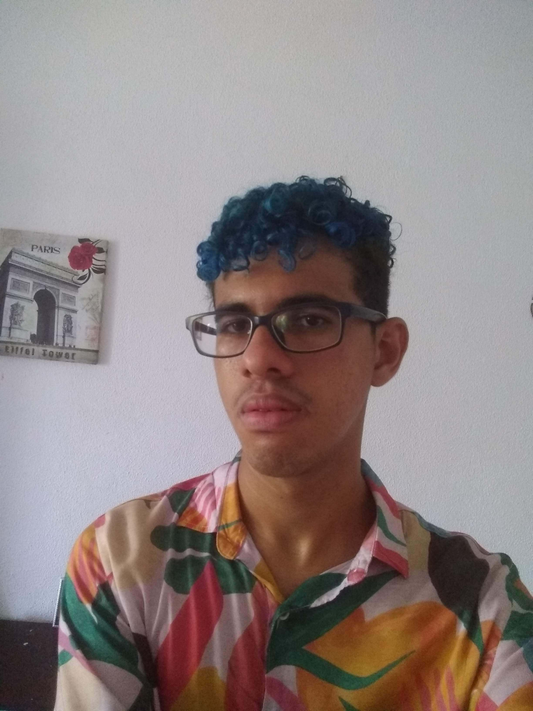

Tiago Lopes
Analista e desenvolvedor de sistemas.
FRONT-END || BACK-END
@tiago_lope.exe / GitHub
Perfil
Saudações. Eu sou Tiago César! É um prazer poder me apresentar para você.
Eu sou uma pessoa com aspiração na área de análise e de desenvolvimento de sistemas e com conhecimentos na área de desenvolvimento de jogos. Como eu gosto de está sempre aprendendo e desenvolvendo novas experiências aos meus usuários, isso trabalhando com minha equipe, eu me vejo como uma pessoa que aprecia estar envolvida em projetos criativos.
Eu passei no programa do embarque digital,uma parceria com a prefeitura do Recife e com o Porto digital, maior parque tecnológico do Brasil e um dos maiores do mundo. Por fim, sou dinâmico, de convivência tranquila e com iniciativa no trabalho.
Busco resolver desafios e entregar projetos
Como analista e desenvolvedor de sistemas eu busco aprender com as situações e procuro soluções para o nosso projeto tecnológico. Coopero e aprecio trabalhar em equipe, executando a minha função e oferencendo ajuda aos meus companheiros quando eles precisam. Minhhas características de Soft Skills me auxiliam a me adaptar à várias situações e aprender com elas; e dessa forma eu trago bastante valor para minha equipe. No desenvolvimento tecnológico eu destaco minhas principais linguagens: para o BACK-END eu uso PHP, que me auxilia no desenvolvimento Web e para o FRONT-END, utilizo HTML e CSS.

Informática
Segue abaixo as minhas principais linguagens de tecnologia:
Experiências
Estágio de análise e desenvolvimento de sistemas - Senac PE.
2022- Dias atuais.
Enquanto eu estagiei no setor de desenvolvimento de tecnologia do SENAC, eu tive a experiência de aprender a modelar e fazer todas as etapas para a criação de um sistema WEB. Assim, eu documentei bastante os processos de criação e utilizei fluxograma para compreender um sistema. Na minha rotina, eu estava envolvido em: trabalhar na documentação; trabalhar como full-stack de um projeto (cuidando do FRONT-END, do BACK-END e do banco de dados); validar minhas atualizações com outros colegas de trabalho; pesquisar e coletar requisitos de um projeto.
Além disso, eu já passei 2 semanas trabalhando com o atendimento ao cliente, aonde eu: comunicava com os integrantes e com os usuários a respeito de suas dificuldades gerais; tirar dúvidas a respeito de um sistema já existente; utilizando o sistema do SENAC, eu cadastrava novos registros de usuários; ajudava os usuários com problemas de acesso à um sistema do SENAC; fazer relatórios.

Formação Acadêmica
Faculdade SENAC – Programa Embarque digital Tecnólogo em Análise e Desenvolvimento de sistemas
2021 – Dias atuais
Universidade Federal Rural de Pernambuco Bacharelado em Sistemas da informação
2021 – Dias atuais
Escola Técnica Estadual Miguel Batista
Técnico em Análise e Desenvolvimento de Sistemas em horário integral Fevereiro
2016 a dezembro - 2019.


Atividades extracurriculares
PROGRAMA GANHA O MUNDO – Intercâmbio Canadá
Intercâmbio Escolar: Holy Spirit High – Conception Bay South, Newfoundland
Período: fevereiro de 2019 á Julho de 2019
Nível de inglês fluente
IELTS(International English LanguageTesting System),Recife
Pontuação Obtida: 6,0 de 9,0
Período: Agosto 2019
Bolsa de extensão em projeto tecológico através da Faculdade Senac e Facepe
Período: Outubro |2021 até dezembro | 2021


{kind=link}
Entre em contato
Caso queira entrar em contato comigo, sinta-se à vontade para me mandar um e-mail ou visitar umas das minhas redes sociais:
© Curriculo Tiago. Todos os direitos reservados. Design: HTML5 UP.